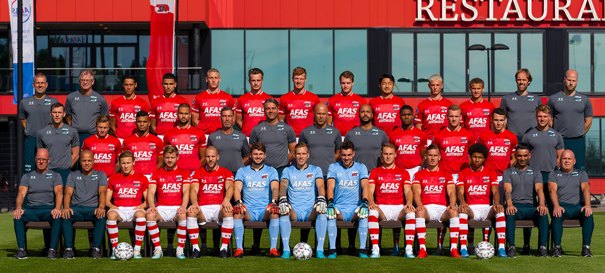

| Doelmannen:
1. Marco Bizot 22. Rody de Boer 16. Jasper Schendelaar |
Verdedigers:
2. Jonas Svensson 3. Pantelis Hatzidiakos 4. Ron Vlaar 5. Thomas Ouwejan 15. Owen Wijndal 23. Leon Bergsma 26. Yukinari Sugawara 27. Ramon Leeuwin 29. Joris Kramer 30. Stijn Wuytens |
Middenvelders:
6. Frederik Midtsjo 8. Teun Koopmeiners 10. Dani de Wit 18. Hakon Evjen 20. Jordy Clasie 21. Kenzo Goudmijn |
Aanvallers:
7. Calvin Stengs 9. Myron Boadu 11. Oussama Idrissi 14. Ferdy Druijf 17. Zakaria Aboukhlal 28. Albert Gudmundsson |
Technische Staf
Arne Slot Pascal Jansen Marino Pusic Nick van Aart |
